Mega-guide: temperature, dig sites, Rare Soil War, and how to finish S2 better than S1
[RGBB] Server #2013
Key Insight — Two facts that change everything from S1
1. Scoring is now "Rare Soil ACCUMULATED over time," not "territory held at end." Every hour you own a city or dig site adds to your final ranking. The "rush at Week 8" strategy from S1 is dead — Week 1 ownership is more valuable than Week 8 ownership.
2. Cross-warzone captures are DISABLED. S2 is intra-server only. Any foreign alliances that planted outposts on your map in S1 cannot attack you cross-server in S2 — their S1 holdings wipe with the new map. The S2 fight is entirely between alliances native to your warzone. Whoever you started Season 2 with is your full competitive field.
Temperature is survival
The map gets colder toward the Capitol (-15°C edges → -80°C center). If your base sits below -20°C for 5 minutes, you freeze — no rallies, no teleport. Heat sources stack: High-Heat Furnace (yours), Alliance Furnace (shared), captured cities (5-60°C), Tower of Victory, recon planes, firebombs, Overdrive mode. Warm bases gain production/durability/morale bonuses.
Rare Soil = season ranking
Capture cities (350-1000 Rare Soil/hr depending on level) and dig sites for continuous drip. Max 6 cities + 4 dig sites. From Week 4, Rare Soil War lets attackers plunder up to 20% of a defender's Rare Soil (30% after Showdown). Defense allies invited per war. Final ranking = total accumulated Rare Soil at season end.
📅 Cross-reference: live S2 event calendar
All dated events in this guide (Murphy/Carlie/Swift weapon releases, Beast Crisis Tue+Fri, Nuclear Furnace W4D6+36h, Warzone Expedition W3, Age of Oil D57, etc.) are also in the site's Event Calendar with iCal export for your phone. The calendar is the canonical schedule source for this guide — if you find a discrepancy, the calendar wins.
1 · Temperature System
S2's signature mechanic. Every base on the map has a temperature reading, and the polar climate is hostile by default.
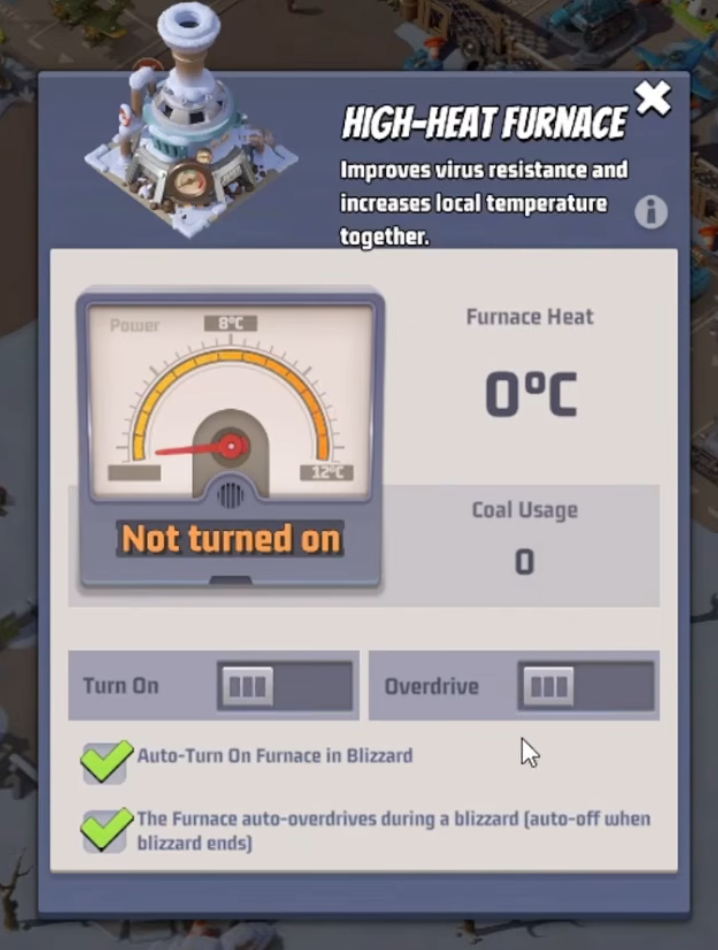
In-game High-Heat Furnace UI — the building you'll obsess over all season
Threshold
Effect
Warm bases (general)
Bonuses to resource production, troop durability, morale (general claim; specific thresholds not in public sources)
The map has a thermal view that shows server-wide temperatures. The closer to the Capitol, the colder the tiles. Use it to plan your push depth — cold zones require pre-built heat capacity.
2 · High-Heat Furnace — Your #1 Building
Unlocks at HQ 30. Provides base heat + virus resistance. The single most important S2 building — every Titanium Alloy goes here first.
Furnace Level
Titanium Alloy Cost
Power
Virus Resistance
Activation Heat
Overdrive Heat
1
2,800
400
100
5.5°C
8°C
15
701,200
24,000
3,000
~12°C
~18°C
30
4,321,100
108,100
10,000
20°C
30°C
Level 30 unlocks 3 hero-type military buildings
Hit L30 and three hero-type-specific military buildings unlock that boost damage for Aircraft / Tank / Missile squads. This is the late-game ceiling — start the climb from Day 1.
Overdrive — use intentionally
Overdrive heats much faster but burns 4× the Coal. Reserve it for:
Blizzard / Cold Wave events (avoid the freeze countdown)
Big rally pushes into cold zones
Rare Soil War defense windows (you need maximum heat under attack)
The Furnace UI has an "Auto-turn on Furnace in Blizzard" toggle — turn it ON so the game saves you when you're offline.
3 · Frozen Base Mechanics
Falling below -20°C is the cliff edge. Understand the timers so you can recover before you lose a day of Rare Soil drip.
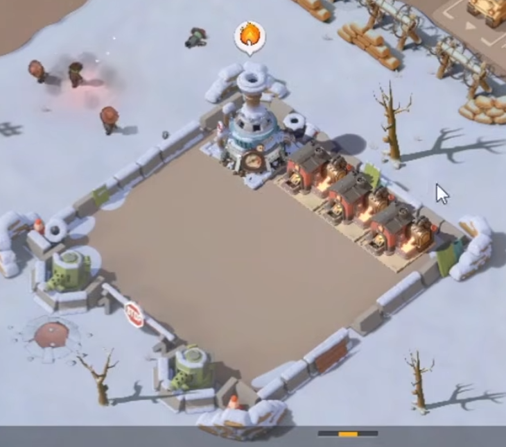
A frozen alliance base on the Polar Storm map — surrounded by ice, unable to rally or teleport
State
Trigger
What happens
Base Almost Frozen
Below -20°C
5-minute countdown starts. Warm the base before timer ends to prevent freeze.
Frozen Base
Below -20°C for 5+ min
No relocation, no rallies. (Alliance/random relocate still works.) Debuffs apply.
Ice Melting Soon
Temperature back above -20°C
5-minute defrost countdown starts. If temp dips below -20°C for even 1 second, restart.
Solutions when frozen or close to it
Relocate to warmer zones via alliance or random teleport
Enable High-Heat Furnace or set it to Overdrive
If in Alliance Furnace range, request Overdrive mode for the Alliance Furnace
Ask allies to send Recon Planes to heat you up
Allies can also send squads to break the ice — 5 hits cost 5 stamina each
4 · How to Get Heat (Every Stack-able Source)
Source
Heat Contribution
Cost / Notes
High-Heat Furnace (yours, normal mode)
5.5°C (L1) → 20°C (L30)
Burns Coal continuously
High-Heat Furnace (Overdrive mode)
8°C (L1) → 30°C (L30)
4× Coal consumption
Alliance Furnace (in radius)
Extends heat to nearby members
Members reinforce upgrade; R4/R5 deploys
Captured Cities
5°C (L1) → 60°C (L6)
Highest single source — adjacency only
Tower of Victory (decoration)
L1: +3°C · L2: +4°C · L3: +5°C (caps)
Purchase in S1 Black Market — see section 7
Recon Planes
Up to 60°C boost
Allies can send to your base
Firebomb (profession skill)
+45°C in 9×9 area, 5 min
23.5h cooldown · L3 skill
Intense Overdrive (profession skill)
+2°C bonus to Overdrive heat
L1 perk
Nuclear Furnace (warzone Capitol)
+10°C warzone-wide when reactivated
Activates W4D6 + 36hr · collective warzone effort, NOT alliance-owned · see section 11A
City Furnaces (your cities)
Heat radius around captured cities
Each owned city projects warmth
Heat LOSS when troops leave base
Base cools when troops are out
Plan rally timing to avoid post-rally freeze
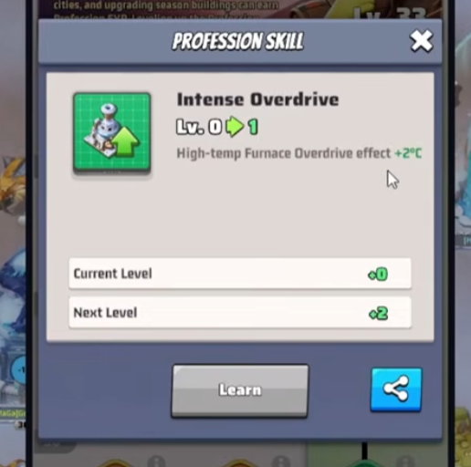
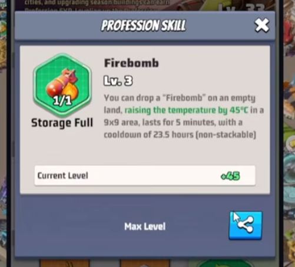
Profession skills: Intense Overdrive (left, +2°C Overdrive) and Firebomb (right, +45°C area heat, 23.5h cooldown)
5 · Ally Heat Help
Heating allies is part of S2's core team mechanic. Friends rescue friends.
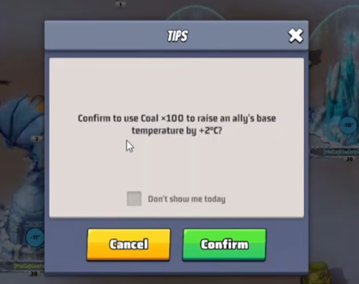
Coal × 100 → +2°C ally heat tip
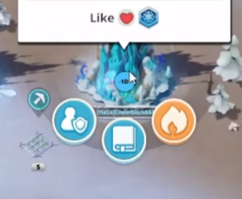
Like / Heat ally action UI
Spend 100 Coal to give an ally +2°C base temperature — small but stacks across multiple allies (sourced via in-game UI screenshot, see thumbnail above)
Click an ally's base for the "Heat" action (alongside Like / Shield / Visit)
This is the cheapest emergency-defrost option when an ally is freezing
Coordinate with your alliance — agree who gets coal donations during a blizzard
6 · Tower of Victory (S1 → S2 Setup)
Decoration that grants permanent base temperature bonus across seasons. Purchased in the S1 Black Market event before S2 starts.
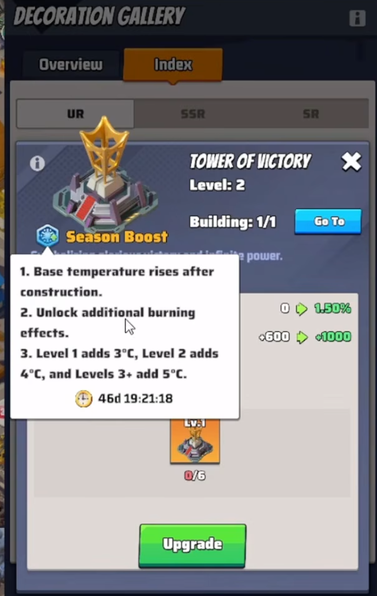
Tower of Victory — pre-S2 black market buy
Level 1:+3°C base temperature
Level 2:+4°C base temperature
Level 3:+5°C base temperature — caps here (Level 4+ provides no extra heat)
Purchase via the Black Market S1 event before S2 starts — buff carries into S2
One per base (1/1 building limit)
7 · Resources — Coal, Titanium Alloy, Rare Soil
Resource
How to Get
What it's For
Coal
Dig sites (hourly), Doom Walker first kills, radar missions, season pass, Distressed Survivor rewards, Coal Pack purchase
Adds 2 extra reward tabs to season tasks · Coal, Profession XP, Skill Points, recruitment tickets, gems
Medium. If you're doing the season tasks anyway, it doubles your reward yield. Buy if you stay engaged daily.
Factory 5 caveat from the source: "It's not advisable to heavily invest [in Factory 5] unless you maintain the pass." Drop the pass = drop the factory's value. So if you can't commit to weekly renewal, only level Factory 5 when its upgrade cost is lower than the others.
Reduce factory + furnace costs
Three stackable savings:
Engineer profession Level 35 — Resource Saving skill (5% reduction on building/seasonal construction costs)
Alliance tech: Veteran Craftsman — lowers building cost
Tech: Master Craftsman — additional discount
8 · Cities & Dig Sites — Capture Rules
Type
Max Owned
Daily Limit
Defender
VR Required
Protection After
Adjacency
Dig Site (replaces Strongholds)
4
2/day
Mutant Beast + polar creatures
L1 = 4,000 L6 = 10,500
36 hours
Need adjacent owned tile (or first capture L1)
City
6
2/day
Mutant Beasts
Scales with level
~6 days
Need adjacent dig site
Critical S2 difference: NO cross-warzone captures
Dig sites and cities can only be captured in your own warzone. S1 outposts to other servers are gone. S2 is intra-server combat — your fight is between alliances physically present in your own warzone.
Virus Resistance ladder for Dig Sites
Same VR system as S1, but the floor is higher and dig site bosses (Mutant Beasts) hit harder than S1 Corruptors:
Dig Site Lv
1
2
3
4
5
6
VR Required
4,000
6,500
8,500
9,500
10,000
10,500
9 · Level Unlock Schedule (S2 Calendar)
Higher-level dig sites and cities unlock progressively. Each unlocks at weekday + 12 hours. Plan rallies around these gates.
Level
Unlocks
Level 1
Week 1, Day 3 + 12 hours
Level 2
Week 1, Day 6 + 12 hours
Level 3
Week 2, Day 3 + 12 hours
Level 4
Week 2, Day 6 + 12 hours
Level 5
Week 3, Day 3 + 12 hours
Level 6
Week 3, Day 6 + 12 hours
Level 7
Week 4, Day 7 + 12 hours
10 · Mutant Beasts (Dig Site Defenders)
Replace S1's Corruptors. Three types, each weak vs a specific squad type — same triangle as PvP.
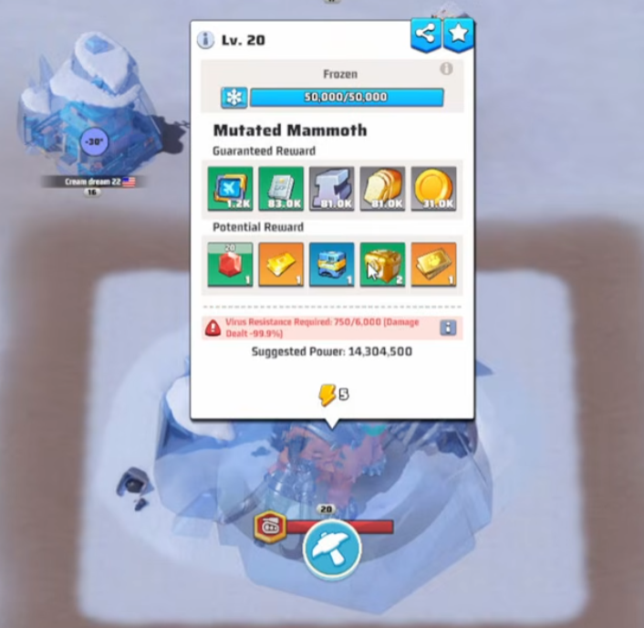
A Mutated Mammoth — one of three dig site boss types, requires correct squad-type counter
Mutant Beast
Strong vs
Weak vs
Gorilla
(per S2 type rules)
(per S2 type rules)
Bear
(per S2 type rules)
(per S2 type rules)
Mammoth
(per S2 type rules)
(per S2 type rules)
Capture process for dig sites
First alliance to reach 100% capture progress within 4 hours wins the dig site. Up to 10 teams can reinforce. If nobody hits 100% in 4 hours, the attempt fails. Beast must be defeated before reinforcement.
11 · Rare Soil War — The Season-Deciding Event
Starts Week 4 Day 1. 8 rounds total, 2 per week through Week 7. Each round has 5 named stages (declaration → invitation → preparation → war → end of war). Source: lastwartutorial Ultimate Strategy Guide.
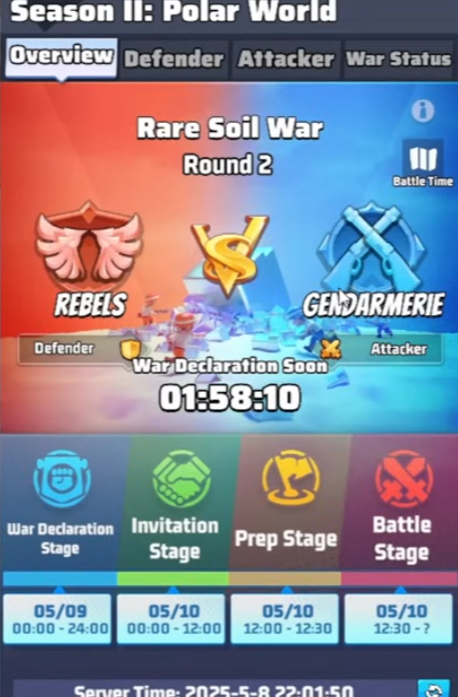
In-game RSW Overview — Round 2 view showing Rebels-as-Defender vs Gendarmerie-as-Attacker, with War Declaration / Invitation / Prep / Battle stage windows and exact clock dates
A · 5-Stage Round (sourced)
Stage
Round 1
Round 2
Start (clock)
Duration
What happens
0 · Waiting
Monday
Thursday
Reset
24 hr
Pre-round buffer
1 · Declaration
Tuesday
Friday
Reset
24 hr
Attack-faction R4+ declare war on defending-faction alliances in the same ranking group. Up to 3 attackers can pile on 1 defender. Target can change until stage end.
Defenders position troops, reinforce Alliance Furnace
4 · War
Wednesday
Saturday
Reset + 12.5 hr
Up to 40 min
Attackers attempt to destroy defender's Alliance Furnace. Furnace at 0% durability before timer = attacker wins, war ends early.
5 · End of War
Wednesday
Saturday
After War
Until reset
Loot distribution, cooldown
Stages and day-of-week per lastwartutorial Ultimate Guide; precise clock offsets (Reset, Reset+12hr, Reset+12.5hr) per in-game documentation screenshot. Translate to your server's reset clock: e.g. if reset = 6pm local, War lands ~6:30am the next morning (Wed reset → Thu morning; Sat reset → Sun morning).
B · Rare Soil Ranking Groups — Matchmaking Brackets
Within each faction, alliances are bracketed by their total Rare Soil into 4 ranking groups:
Group 1: ranks 1–10
Group 2: ranks 11–20
Group 3: ranks 21–30
Group 4: ranks 31–50
You can only declare on alliances in the opposite faction AND your own ranking group. Defense invitations also obey the same-bracket rule.
Strategic implication: if your alliance pulls way ahead of your faction-aligned allies in Rare Soil accumulation, you could end up in different brackets and be unable to declare/invite each other — splitting coordinated defense. Worth tracking the RS gap weekly to stay near each other's brackets if joint defense matters more than max accumulation.
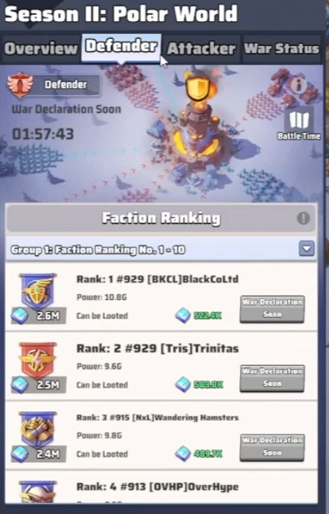
Defender tab — your ranking group with "to be Looted" amounts
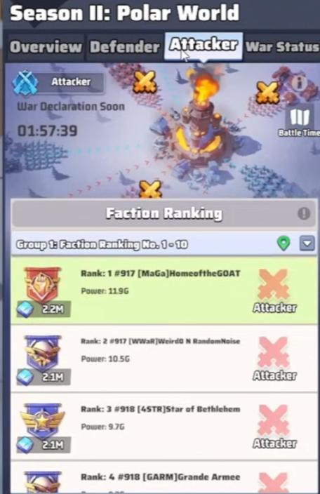
Attacker tab — opposite-faction alliances in your same group
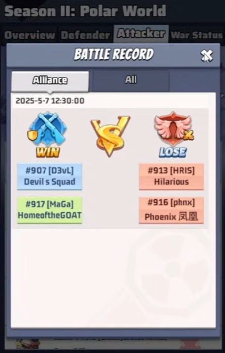
Battle Record — past round outcomes (2v2 example)
C · War Mechanics — Victory, Durations, Plunder
Victory condition: Reduce defender's Alliance Furnace durability to 0% before timer expires. Furnace destroyed early → war stage ends, attacker takes plunder.
War durations (per matchup):
1v1, 2v2, 3v3 = 40 min
2v1, 3v2 (defender 1 fewer) = 30 min
3v1 (defender 2 fewer) = 20 min
Plunder: Winning attackers steal up to 20% of defender's accumulated Rare Soil. After the Rare Soil Showdown event later in season, that rises to up to 30%.
D · Warlord Missile — Attacker-Only Skill
A devastating skill exclusive to the Warlord title-holder in the attacking alliance. Sources: lastwar-tutorial.com Rare Earth War tips + in-game documentation screenshot.
Aspect
Spec
Who can launch
Only the player holding the Warlord title in the attacking alliance
When
During Preparation and War stages of an RSW round
Target zone
Inside the defender's Alliance Furnace catchment area. Launch origin is unrestricted, but Warlord + target must be on the same server.
Launch prep
180 seconds (3 min) countdown after activation
During prep — vulnerable
War Fever status: Warlord's base location is published to the entire server in world chat. Everyone server-wide — including cross-server visitors — can attack the Warlord's base during these 3 minutes. The Warlord cannot use a shield during prep (same restriction as Capitol fight).
Abort condition
If the Warlord's base moves (relocates or gets breached) during prep → missile fails + 72-hour cooldown
Furnace damage on launch
30,000 durability damage to defender's Alliance Furnace
Blast radius
25×25 fields centred on the impact point. All bases in radius are forcibly teleported to random world-map positions. Shields are NOT broken by the relocation.
Contaminated Land
Blast area becomes Contaminated Land temporarily (exact duration not in public source — verify in-game)
Strategic notes:
If your alliance attacks: the Warlord becomes a 3-min open target. Coordinate alliance "body-block" defense around the Warlord's base; ideally pre-position rallies before activation. If the Warlord gets bumped or runs, missile is dead for 72hr.
If your alliance defends: Watch world chat for the enemy Warlord's reveal. The entire 3-min window is open season — pile rallies on them to abort the missile.
30k Furnace damage is huge. Combined with normal attacker damage, the missile alone can take a fragile Alliance Furnace to 0% — that's an instant attacker win. Keep your Furnace durability buffer high during RSW windows.
11A · Beast Crisis — Defending the Alliance Furnace
Twice-weekly defensive event where mutant beasts attack your Alliance Furnace. Different mechanic from the dig site beasts in section 10 — here, beasts come to you. Source: lastwartutorial Week 2.
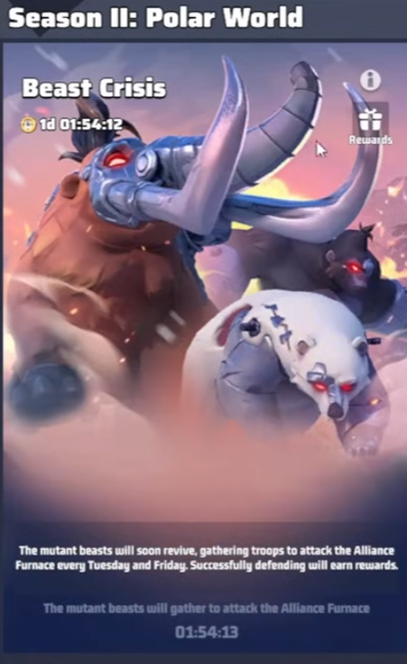
In-game Beast Crisis event — mutant Mammoth + Polar Bear + Gorilla attack your Alliance Furnace every Tuesday and Friday from Week 2
When + how it works
Starts: Week 2 Day 1. Runs for 19 days.
Schedule:Tuesday and Friday each week, mutant beasts attack every alliance's Alliance Furnace.
Defense: Every alliance member sends 1 squad as a reinforcement — up to 100 squads total per Furnace defense.
Attack waves: 30 waves with 1-minute delay between each. Full attack lasts 30+ minutes.
Difficulty scaling: Each subsequent Beast Crisis event has stronger beasts than the previous one.
If your Furnace is destroyed: you lose the ability to claim rewards for that wave + subsequent waves in that event.
Rewards — tiered by waves endured
The further your Furnace survives into the 30-wave sequence, the higher the tier of rewards your whole alliance claims. Rewards apply to all members, even those who didn't directly reinforce — so even idle players benefit.
Strategic implication: Beast Crisis is one of the easiest passive reward streams in S2 — show up, reinforce once, claim full alliance rewards. Schedule R4+ to make sure the reinforcement cap (100 squads) is hit before each Tuesday/Friday event.
Tuesday clash with RSW Stage 1
Tuesday is double-duty: RSW Stage 1 (Declaration) runs all Tuesday for 24 hr, AND a Beast Crisis event runs on Tuesday too. They don't directly compete for the same resources, but R4+ should plan declarations and beast reinforcement squads as separate actions on Tuesday.
Friday is also double-duty from Week 4 onwards (RSW Round 2 Declaration + Beast Crisis Friday event). Same coordination note applies.
11B · Nuclear Furnace, Faction System & No Builder Alliances
S2 retires the S1 Capitol Conquest and Builder Alliance concepts. The Nuclear Furnace at map centre is a warzone-shared objective, and alliances are split into two factions for Rare Soil War.
Nuclear Furnace — warzone Capitol (not a captureable alliance prize)
Sits at the centre of the map (L7 tile). It is NOT a Capitol Conquest target like S1's Capitol — it's a collective warzone objective:
Activation: mission opens Week 4 Day 6 + 36 hours delay (= Week 4 Day 7 + 12 hours server time) per lastwartutorial Week 4. Note: an alternative in-game schedule screenshot lists Capture Nuclear Furnace at W4 D3 + 36hr delay — possibly a different / older calendar version. Verify in-game which schedule your server uses.
How it's reactivated: every alliance in the warzone sends troops to fill a reactivation bar to 100%. Each squad send costs 5 stamina. Collective effort, NOT owned by one alliance.
Reward when reactivated: the Nuclear Furnace provides +10°C warzone-wide base heat — every base on the map benefits, not just the alliance that contributed most.
Glacieradons spawn and reduce furnace progress by ~1% every 4 hours while alive — alliances must kill them to keep the bar climbing.
Faction Rewards are issued for killing Glacieradons and completing reactivations. Reward tier scales with your personal contribution + your faction's overall performance.
Week 5 mission: "Turn on Nuclear Furnace" runs for 7 days. Cold Wave Alert -90 hits in parallel.
Glacieradon — the cross-server boss you should hunt on multiple warzones
4 Glacieradons spawn total — one per day after the Nuclear Furnace event begins.
Each spawns at one of the 4 map corners and walks through cities toward the Nuclear Furnace.
Cannot attack while moving — wait until the Glacieradon reaches a city, THEN attack.
5 attacks per day per server per player. Use them — they're the limiting factor.
If a Glacieradon captures a city before you kill it, it goes neutral + protected. Defenders can reinforce the city to add damage while it's there.
Cross-server attacks are ENABLED. Same-faction commanders can hop to other servers and attack Glacieradons in those warzones — and other servers' players can help yours. Each server gives you a fresh 5 attacks/day quota, so hopping to N servers = 5×N attacks per day.
Each Glacieradon you kill (your server or any other) contributes to your personal Faction Rewards tier.
Strategic implications:
Coordinate a cross-server hopping list with your faction-aligned allies — daily rotation across multiple warzones to burn the 5-hit quota on every visited server.
Pay attention to which corner each Glacieradon spawns and predict its city path — better hits on slower / more durable cities along the route.
Don't let it capture a city if you can prevent — captured = protected = wasted damage potential.
Faction System — Rebels vs Gendarmerie (replaces S1 free-for-all)
Week 3: all alliances on the warzone are auto-split into two factions — Rebels and Gendarmerie. The split criteria are server-specific and not documented publicly; track which faction your alliance lands in once it triggers.
Week 4: Rare Soil War begins between factions. Alliances within the same faction collaborate; alliances in opposite factions are matchmade against each other for the 8 RSW rounds (2/week through W4-W7).
Within that faction, your alliance also lands in a Rare Soil ranking group (1-10, 11-20, 21-30, or 31-50) which determines who you can declare on / be declared on by — see the Ranking Groups highlight box in section 11 above for bracket mechanics.
This means your RSW opponents aren't picked freely — they're constrained to the opposite faction AND same ranking group. Your faction-aligned allies may end up on either side depending on the auto-assignment, so coordinated pre-W3 planning helps less than reading the post-split brackets and reacting.
No Builder Alliances in S2
The S1 "Builder Alliance" mechanic — where some alliances specialised in constructing outposts/forts unlocking Week 4 — does not exist in S2. Per a Last War Tutorial community comment: "Season 2 and 3 are completely different in logic about wars, so it's not needed."
S2's only alliance-level facility is the Alliance Furnace (one per alliance, R4/R5 deploys it on Day 1). Heat sharing and the Rare Soil War replace the S1 outpost/builder system.
Practical takeaway: don't plan around capturing builder outposts — they don't exist. Optimise around the Alliance Furnace, the Rare Soil War bracket, the Nuclear Furnace reactivation, and direct city/dig site holdings.
11C · Cross-Server Warfare (4- or 8-Server Brackets)
Layered on top of the in-warzone Rare Soil War, S2 also pairs your server with 3 or 7 other warzones in a bracket tournament called the Warzone Duel. Plus a Warzone Expedition mechanic enables free teleport between same-zone warzones — which is what lets Glacieradon cross-server hunting and Warlord Missile cross-server attacker pool work.
Mechanism: Free teleportation between warzones within the same season zone.
What you can do: Invade other warzones, capture land and strongholds there, contribute to your faction's broader effort.
What this enables: the cross-server mechanics already documented in this guide — Glacieradon hunting (section 11B) gets 5 attacks/day per visited server, and the Warlord Missile prep window (section 11D) exposes the Warlord to attackers from other servers too.
Faction Duel — season-end Rebels vs Gendarmerie finale
Last War: Survival YouTube content references a Faction Duel as the final winner-takes-all battle between the two S2 factions at season end. Specific mechanics (matchmaking, scoring, reward tiers) are not documented in any public text source I could fetch — marked as verify-in-game in section 18. Track Week 7-8 in-game event feed.
Strategic implications
The Warzone Duel layers ON TOP of in-warzone RSW — it doesn't replace it. Your alliance still fights its in-warzone factional ranking group every Tue/Wed and Fri/Sat.
The Warzone Duel bracket is decided automatically — you can't pick your opponents. Coordinate with your faction-aligned allies on which faction your server's leadership lands in so combined effort isn't wasted.
From Week 3 onward, the free teleport opens up — that's the moment to start cross-server Glacieradon hunts (Week 4-5) and to track which other warzones are weak vs which are stacked.
If your server draws a 4-server bracket, expect ~2 weeks of weekly-cadence cross-server play. 8-server = ~3 weeks. Plan war chests + speedups accordingly.
Violet becomes a UR hero in S2. Her buff: +5% damage reduction, which stacks with Murphy's damage reduction for a combined defensive wall. Wait for a VS hero day to do the upgrade so you double-dip on VS points.
New exclusive weapons in S2
Season 2 introduces three exclusive weapons (per the in-game S2 event timeline tracked in the Event Calendar):
Murphy Exclusive Weapon — releases S2 Day 4. Detailed breakdown at cpt-hedge.
Carlie Exclusive Weapon — releases S2 Day 18. Strengthens the Aircraft squad.
Swift Exclusive Weapon — releases S2 Day 39 (mid-late season).
Missed weapons can be re-acquired through the Black Market. Day 3 also brings the Weapons of Legends Tavern event with shards for Kimberly, DVA, and Tesla.
14 · Pre-S2 Preparation Checklist
Things to do during the final days of S1 so you arrive in S2 with leverage.
1
Buy Violet shards + survival shards in S1 events
2
Research Veteran Craftsman (alliance tech) — reduces S2 building cost
3
DON'T spend all hero return tickets — keep some for S2 needs
4
Purchase Tower of Victory in the S1 Black Market — grants permanent base temperature buff into S2
5
Stack radar missions for S2 Day 1 — you need a Distressed Survivor task to spawn (it rewards Coal)
6
Scout your first dig site target — picking a high-coal-output L1 dig adjacent to your start saves days of work
7
Two first bloods are possible: hit a high-level Doom Walker right before S1 reset (1st blood), then again right after S2 starts (2nd blood). Bank both rewards.
8
Engineer profession to Level 35 for the Resource Saving skill — 5% reduction on building/seasonal construction costs (Coal included)
9
Buy the Coal Pack if available — your Day-1 Coal stockpile determines your first 48 hours
10
Renew alliance friendship pacts with your S1 friend alliances. Confirm in writing (or at minimum in private chat with R5s) that they'll respond to your Stage-2 Rare Soil War defense invitations. Without confirmed defense allies, you fight alone.
Establishes positive baseline heat for early operation
Hour 12-24
Capture first L1 Dig Site
Needs 4,000 VR · pick high-Coal output adjacent to start
16 · Strategic Tactics for Season 2
Position yourself before Week 1 ends
Whether your alliance enters S2 as the dominant power, mid-tier, or an underdog, the same playbook applies — early diplomatic clarity + early territory hold + early Furnace ramp. Identify your power ranking on the server, scout your top rivals, lock down friend pacts before Week 4 (when Rare Soil War starts), and commit to a defensive or offensive posture from Day 1.
1
Scout your top rival alliance. Whoever sits at #2 (or #1 if you're chasing) is the alliance whose moves you watch every day. Try to determine if they're aligned with you or against you before war declarations open. Allied = unbeatable defensive bloc. Hostile = expect them to anchor the dogpile against you.
2
Lock in your strongest 2-3 friend alliances. Confirmed pacts with R5s, in writing if possible, with explicit Rare Soil War mutual-defense commitments. Your Stage 2 defense invites only work if your friends actually show up.
3
Classify every other alliance on the server before Week 4. Unclassified alliances are diplomatic landmines once Rare Soil War declarations begin. Each one is either a future ally (lean in early) or a future target for offensive Rare Soil Wars.
4
S1 cross-server threats drop off. Any alliance whose home warzone is NOT yours can no longer attack you in S2. Their S1 outposts on your map wipe. Update your threat assessment accordingly — your S2 fight is purely intra-server.
5
Pre-build a defense roster. You + 2 committed friend alliances = unbeatable in 3v3 Rare Soil Wars. Avoid getting baited into 3v1 defense scenarios where a single attacking coalition outnumbers you and your allies.
6
Pick 4 dig sites Week 1, hold all season. Each = continuous Coal + Rare Soil drip. Don't trade them. Don't fight wars over single dig sites unless you're attacking up.
7
Capture even L1 cities Week 1. 350 Rare Soil/hr × 1,344 hours (8 weeks) × 4 cities = ~1.88M Rare Soil just from low-level cities held all season. Early capture beats late capture.
8
Offensive Rare Soil War: attack high-stockpile alliances who lack defense pacts. Plundering 20% of a hoarder > plundering 20% of an average alliance. Pick isolated targets — coalitions are harder to break.
Win condition for S2
Highest accumulated Rare Soil at territory lock (end of Week 8). To outscore your top rival, you need to either:
Hold more (or higher-level) territory than they do across the whole season (more passive drip)
Plunder more from them in Rare Soil Wars (direct theft of their score)
Both — the winning move
Math (using sourced L1 and L6 boundary rates): holding 4 L1 cities at 350 RS/hr × 1,344 hours (8 weeks) = ~1.88M Rare Soil from cities alone (floor). Holding 4 L6 cities at 1,000 RS/hr would yield ~5.38M (ceiling). Mid-tier rates extrapolated linearly — see section 18 unsourced list. Plus dig sites, plus event bonuses, plus Rare Soil War plunder.
17 · More S2 Tips
Keep your base warm — warm bases gain production / durability / morale bonuses (specific buff thresholds vary, not in public sources — verify in-game UI)
Military buildings unlock at Furnace L30 — three hero-type damage boosters
The thermal view of the map shows server-wide temperatures — closer to Capitol = colder
Blizzard / Cold Wave events drop temperatures — Auto-Overdrive your Furnace to compensate
Beast Crisis & Cold Wave events grant rewards for not freezing
18 · Things to Verify In-Game
⚠️ Claims still unsourced — verify these against in-game UI
These are the residual gaps after the source audit. We removed all unsourceable threshold claims (specific +4/+40/+50°C buff trigger values) from the guide body; what remains here is observational stuff to confirm on Day 1.
0°C → Supply Collection coordinates appear (section 12) — lastwartutorial says supplies "appear randomly when 0°C is reached" without specifying whether 0°C is the floor or the trigger. Watch when the first supply cords actually show up.
City Rare Soil mid-tier rates (L2-L5) — only L1 (350/hr) and L6 (~1,000/hr) confirmed in any source; L2-L5 rates extrapolated linearly. Verify by holding one of each tier.
Dig site recapture cooldown after abandonment — cities have ~6-day protection; dig site cooldown not explicitly documented. Observe after first abandonment.
Contaminated Land duration after Warlord Missile — the blast area becomes Contaminated Land temporarily but the public source cut off before specifying duration. Observe in-game how long bases can't move into the blast zone after a successful missile.
Nuclear Furnace capture mission day-of-week (W4D3 vs W4D6) — lastwartutorial Week 4 says mission opens W4D6 + 36hr; an in-game schedule screenshot says W4D3 + 36hr. Possibly different calendar versions or server variation. Check the in-game S2 event timer on your server on Week 4 to confirm.
Faction Duel mechanics — the season-end Rebels vs Gendarmerie finale is referenced in YouTube content but no public text source documents the matchmaking, scoring, or reward tiers. Verify in-game during Week 7-8.
Which faction your alliance lands in (Week 3 auto-split — Rebels vs Gendarmerie) — server-specific assignment criteria not publicly documented. Confirm in-game once Week 3 triggers; same for your faction-aligned allies.
Removed from the guide body (no public source found): +4°C → +10% resource buff threshold, +40°C → production/movement/healing buff threshold, +50°C → World Boss damage buff threshold. If you find these in the in-game UI, ping back and we'll re-add with the in-game UI as source.
✓ Claims that ARE verified — and the source that backs them
Receipts for every numeric/mechanical claim in this guide:
RSW 5-stage round structure (Waiting → Declaration → Invitation → Preparation → War → End of War), day-of-week (Tue/Wed Round 1, Fri/Sat Round 2), precise clock offsets (Invitation = Reset, Preparation = Reset+12hr, War = Reset+12.5hr), ranking groups 1-10/11-20/21-30/31-50, victory = destroy defender's Alliance Furnace, up to 3 attackers / up to 2 defenders invited → lastwartutorial Ultimate Strategy Guide + in-game documentation screenshot
Warlord Missile mechanic: 180s prep with War Fever (server-wide location reveal, no shields), 72hr cooldown if Warlord moves, 25×25 blast radius, 30k Furnace durability damage, forced random teleport (shields preserved), temporary Contaminated Land → lastwar-tutorial.com Rare Earth War tips + in-game documentation screenshot
Beast Crisis event: starts Week 2 Day 1, runs 19 days, Tue + Fri attacks on each alliance's own Alliance Furnace, 30 waves × 1 min apart, up to 100 reinforcement squads (1 per member), tiered rewards by waves endured (all members claim regardless of participation), difficulty scales per event → lastwartutorial Week 2
Coal × 100 → +2°C ally heat (give 100 Coal to an ally for +2°C base temperature) → in-game UI screenshot embedded in section 5
Firebomb profession skill: +45°C heat in 9×9 area, 5 min duration, 23.5h cooldown, L3 perk → in-game UI screenshot embedded in section 4
Intense Overdrive profession skill: +2°C bonus to Overdrive heat output, L1 perk → in-game UI screenshot embedded in section 4
Glacieradon mechanics: 4 bosses, one per day, spawn at 4 map corners and walk through cities toward Nuclear Furnace. Cannot attack while moving — wait until they reach a city. 5 attacks/day per server per player. Cross-server attacks ENABLED — same-faction commanders can help across warzones for fresh 5-hit quotas on each server. If a Glacieradon captures a city, it goes neutral + protected → lastwartutorial Week 5
Faction system: Rebels vs Gendarmerie split in Week 3, RSW between factions starts Week 4 → lastwartutorial Week 4
No Builder Alliances in S2 (S1 mechanic retired) → community comment on lastwartutorial Ultimate Strategy Guide: "Season 2 and 3 are completely different in logic about wars, so it's not needed"
Compiled by RGBB Strategic Command, June 2026. Every numeric/mechanical claim left in the body has at least one cited source — see section 18 "Claims that ARE verified" for the full receipt list. The few items still in section 18 "Claims still unsourced" are observational details to confirm on Day 1; nothing in the guide body relies on an unsourced threshold. If you find any of the removed claims (+4°C / +40°C / +50°C buff thresholds) in the in-game UI, send a screenshot and we'll re-add them with the UI as the source.